Zentrale

Startpunkt mit allen Stationen, Projekt-Tresor, Varianten-Archiv und iPad-Kopplung. Von hier öffnest du jede Station; Kosmo begleitet überall.
✍️ Verbesserungen / Befunde:
Startpunkt mit allen Stationen, Projekt-Tresor, Varianten-Archiv und iPad-Kopplung. Von hier öffnest du jede Station; Kosmo begleitet überall.
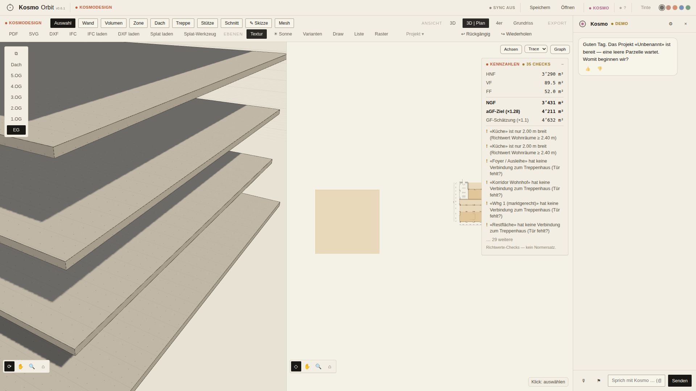
BIM-Modell mit Wänden, Decken, Dach, Treppen, Zonen und Möbeln (TKB-Demo). Orbit mit Rechtsklick/Trackpad, Skizzieren direkt auf Flächen, Kontextmenü mit Rechtsklick.
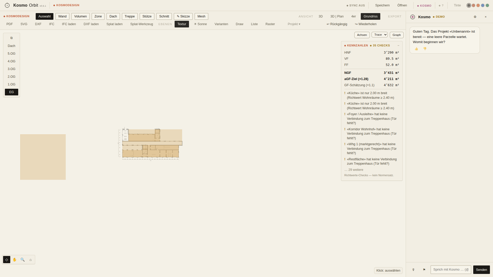
Abgeleiteter Grundriss mit SIA-Schraffuren, Verschneidungs-Poché, Bemassung, Koten und Zeichenhilfen. Anwählen/Verschieben wie im CAD, Doppelklick setzt ab.

Grundriss, Schnitt, Ansicht und 3D gleichzeitig — alles live aus demselben Modell abgeleitet, keine getrennten Zeichnungen.
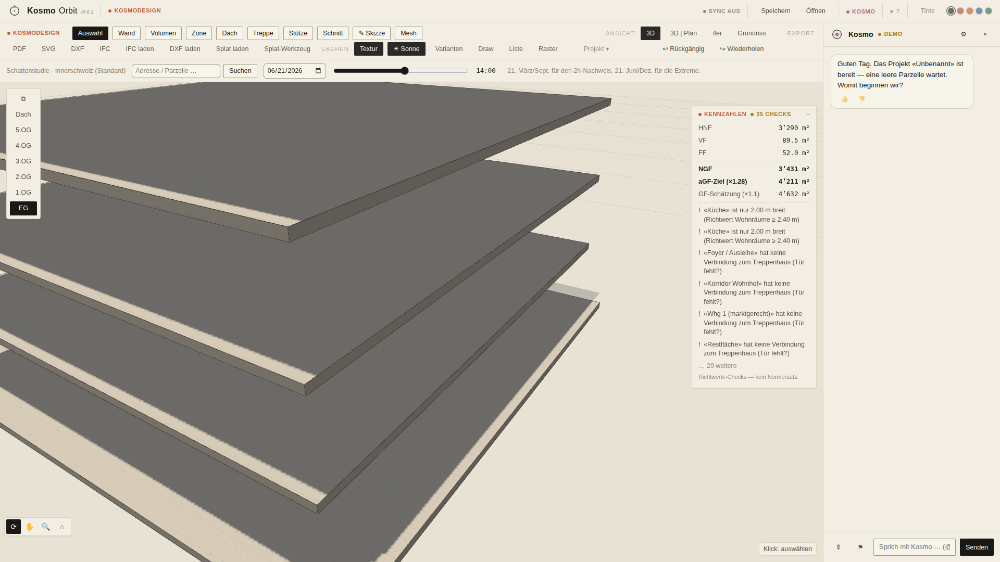
Echte Sonnenstände am Projektstandort (Datum/Uhrzeit-Regler), Schattenwurf im 3D. Grundlage für den neuen Besonnungs-Kennwert der Volumenstudien.
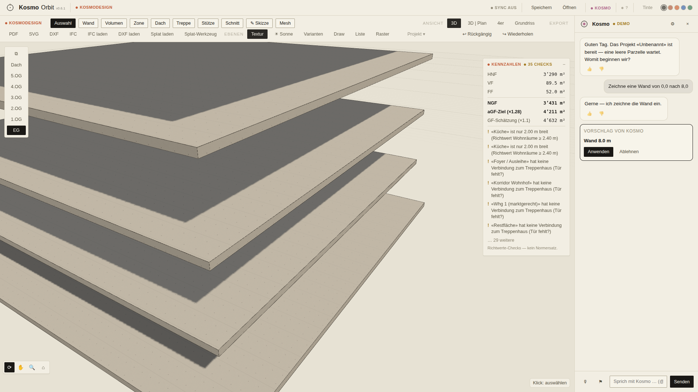
Kosmo schlägt Modelländerungen als Diff-Karten vor; «Anwenden» läuft über denselben Command-Weg wie Handarbeit — ein Undo-Schritt, nichts passiert ungefragt.
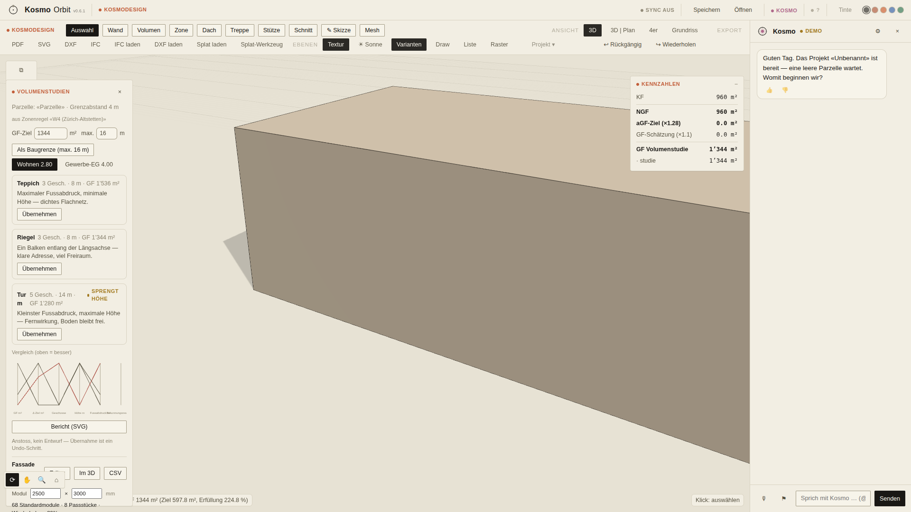
NEU heute Nacht: Die aktive Zonenregel (AZ, max. Höhe, Grenzabstand) füllt die Studien-Regler automatisch («aus Zonenregel …»), die Extremvarianten zeigen Besonnung und Programm-Erfüllung, der Parallel-Achsen-Vergleich macht sie vergleichbar. Kosmo kann die Studie jetzt selbst auslösen (Befehl «grundlagen.volumenstudie») — eine Übernahme ist EIN Undo-Schritt.
NEU heute Nacht: Ein Klick auf «Bericht (SVG)» exportiert die Studie als druckfähiges Blatt — Varianten-Footprints im gemeinsamen Massstab, Kennwerte, Besonnung, Programm-Erfüllung. Ehrlichkeits-Zeilen stehen im Blatt: Richtwerte, kein Nachweis; fehlende Daten zeigen «—».
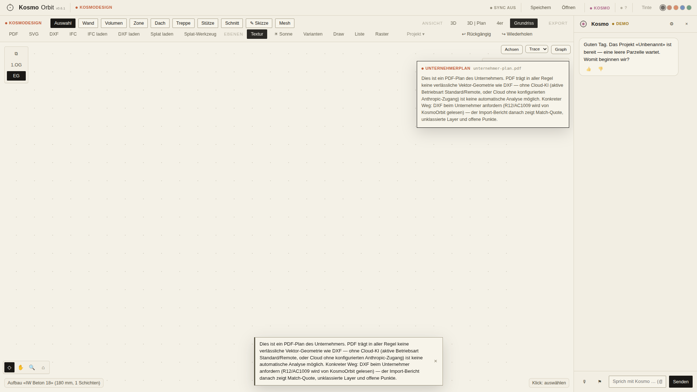
NEU heute Nacht: Schickt ein Unternehmer ein PDF statt DXF, erkennt KosmoOrbit das (auch bei falscher Endung) und sagt ehrlich, warum ohne Cloud-KI keine automatische Analyse möglich ist — plus den konkreten Arbeitsweg (DXF anfordern, R12 wird gelesen). DXF-Pläne werden weiterhin verglichen und als anwendbare Karten angeboten.
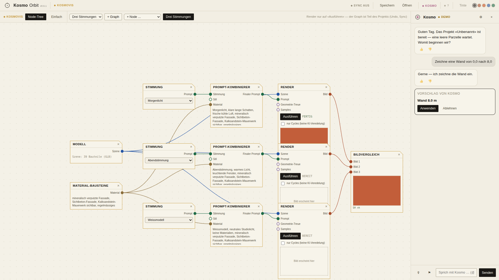
Szene → Stimmungen → Render als Node-Baum; Render-Jobs laufen über die HomeStation-Bridge (hier Fake-Worker). «Einfach»-Tab für den schnellen Weg.
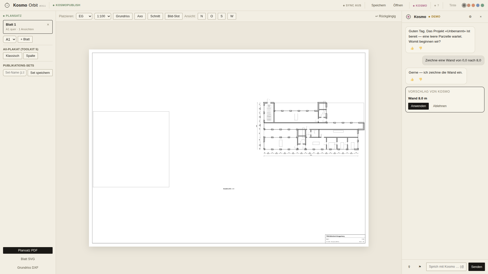
Pläne, Bilder und Legenden auf A1-Blättern layouten, Publikations-Sets für den Ein-Klick-Export (PDF/SVG), Revisionswolken und Transmittal.
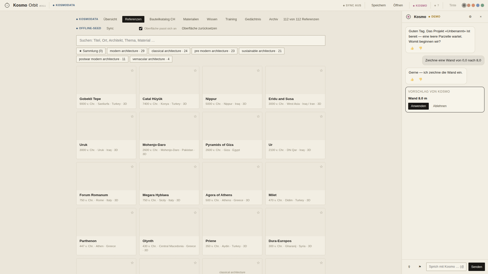
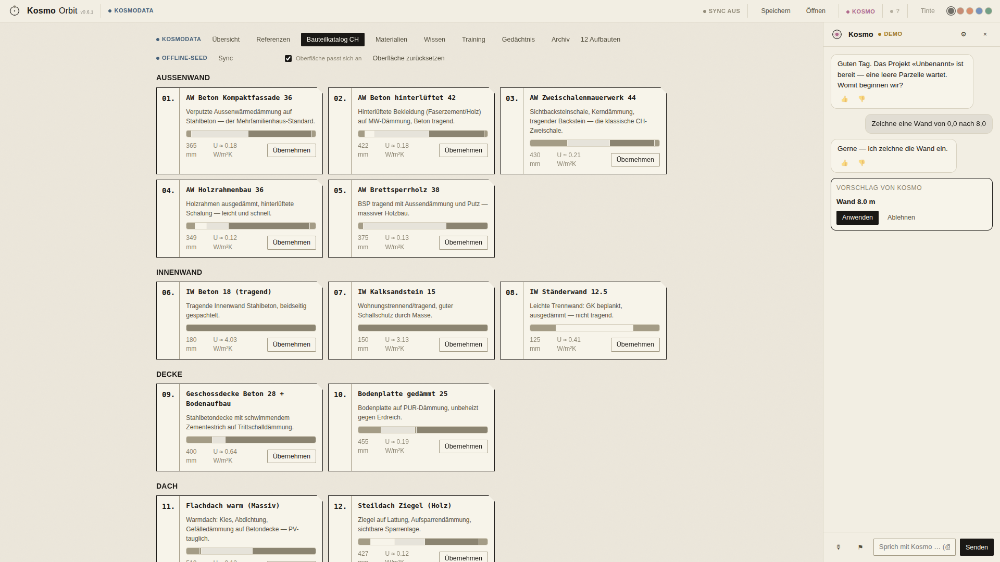
Referenz-Kanon, CH-Bauteilkatalog, Wissen, Training, Gedächtnis unter einem Dach. NEU heute Nacht: dieselbe lernende Oberflächen-Adaption wie in KosmoDesign — häufig Genutztes bleibt präsent, Ungenutztes tritt zurück; Schalter und Reset direkt in der Leiste.
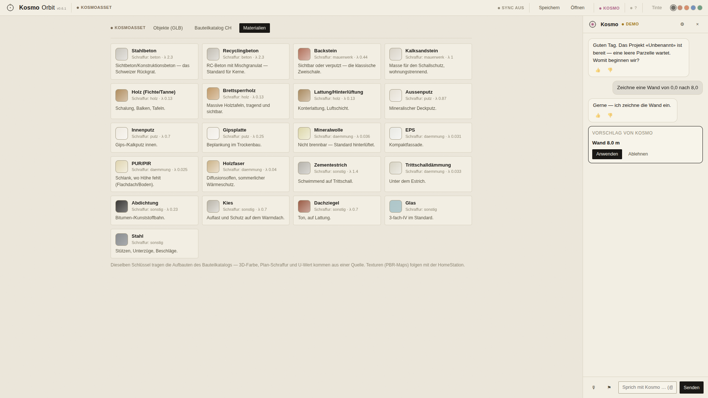
3D-Objekte und PBR-Materialkarten mit Vorschau, Sammlungen und Verknüpfung zu Referenzen («Assets dieses Projekts»).
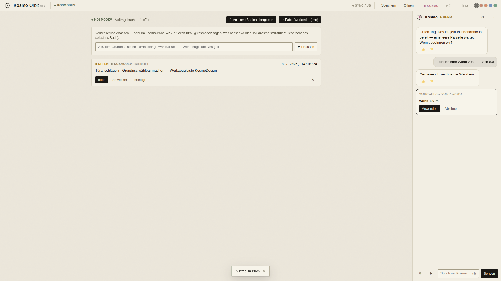
Deine Aufträge an die Software-Werkstatt: erfassen, priorisieren, als Workorder exportieren. Genau hier landen auch deine Notizen aus diesem PDF.
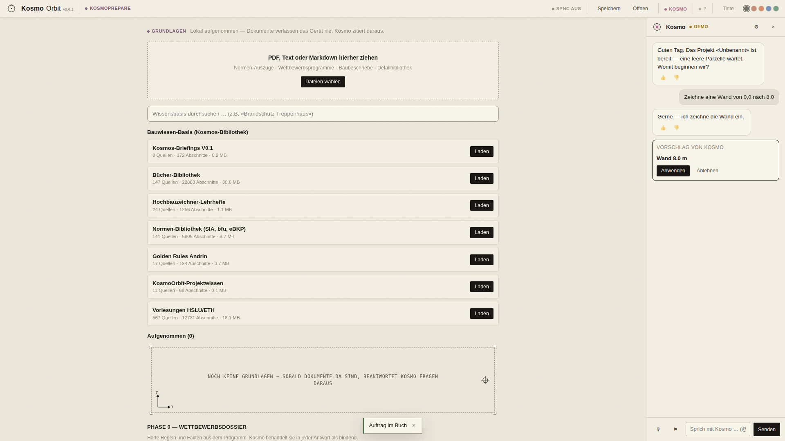
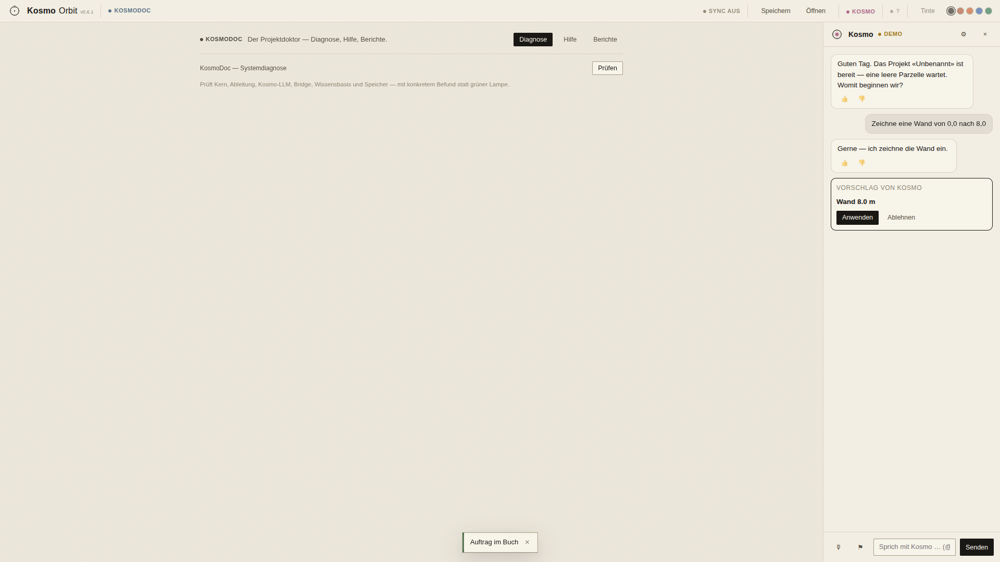
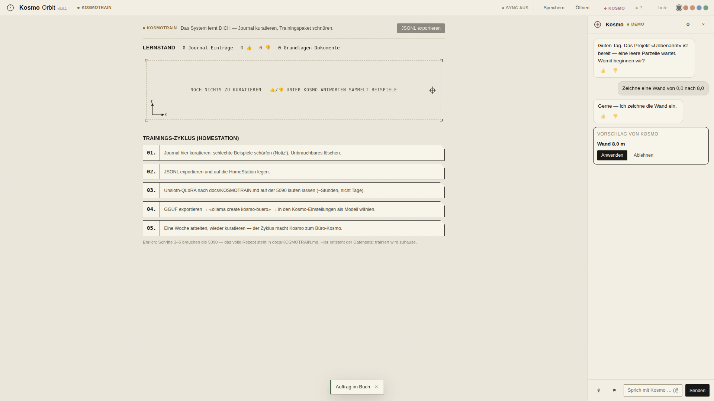
Wissens-Ingest (OneDrive-Lesen), Diagnose/Hilfe/Berichte und Kosmos Lernstand mit Kuration — die drei Stationen rund um Wissen und Lernen.
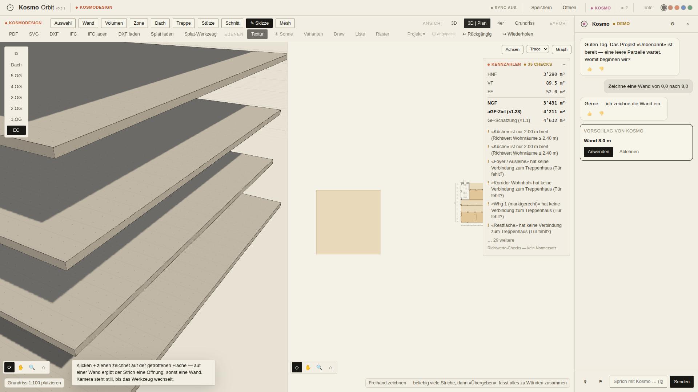
Mengen, Ausmass und Berechnungsliste aus dem Modell; daneben KosmoSketch fürs freie Zeichnen (Pencil → BIM).
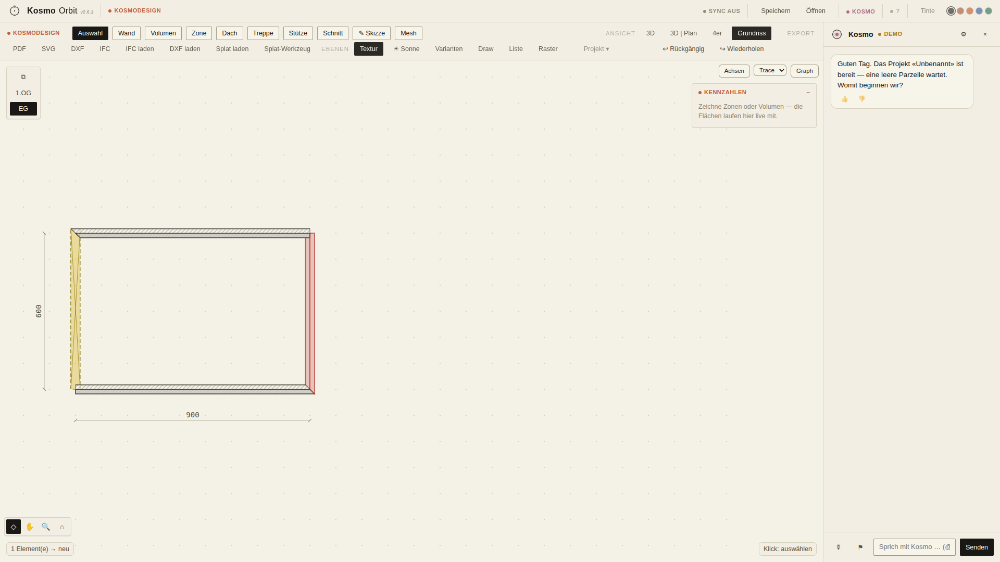
Ein Modell, drei Zustände: Umbau-Status je Bauteil, gefilterte Abbruch-/Neubaupläne je Blatt, SIA-konforme Darstellung.